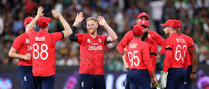

England Test Team
‘Bazball’ innovators with aggressive play.
About England Test Team

Country: England
Home Ground: Various (e.g., Lord’s, London)
Captain: Ben Stokes
Coach: Brendon McCullum
England’s Test team has redefined the format with their aggressive ‘Bazball’ approach under Stokes and McCullum.
England Players
Ben Stokes (C)
Captain, all-rounder.
Joe Root
Batsman, top-ranked anchor.
Zak Crawley
Batsman, aggressive opener.
Ben Duckett
Batsman, opener.
Harry Brook
Batsman, rising star.
Jonny Bairstow
Wicketkeeper-batsman, dynamic.
Moeen Ali
All-rounder, off-spinner.
James Anderson
Bowler, swing specialist.
Stuart Broad
Bowler, pace bowler.
Mark Wood
Bowler, express pace.
Jack Leach
Spinner, left-arm orthodox.